戦闘背景・全70迷宮と無限迷宮
画像は原画の明るさ。戦闘中は魔物・名札・HPを見やすくする暗幕と、主・強敵の周辺光を重ねる。
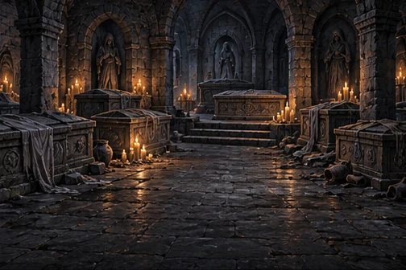
w01 — 忘れられた地下墓地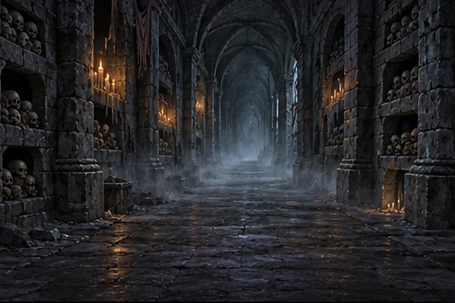
w02 — 亡骸の囁く回廊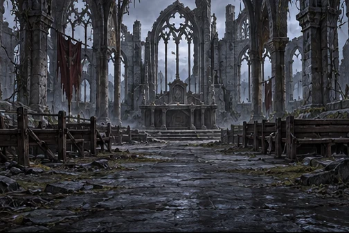
w03 — 朽ちた骸の修道院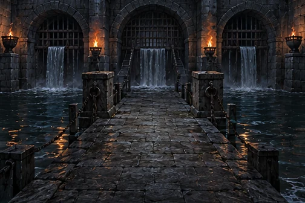
w04 — 黒水の取水口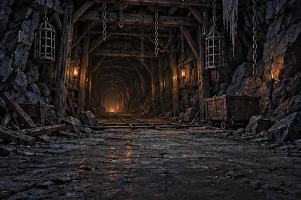
w05 — 鎖の垂れる坑口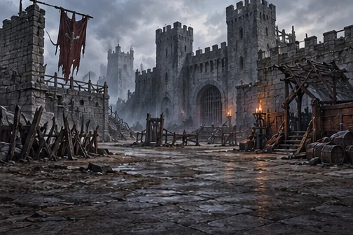
w06 — 亡兵の守る外郭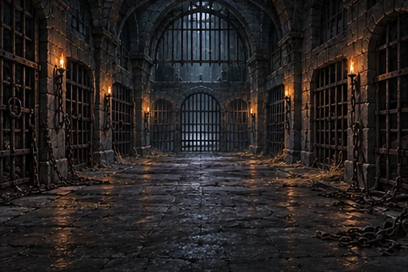
w07 — 捨て砦の地下牢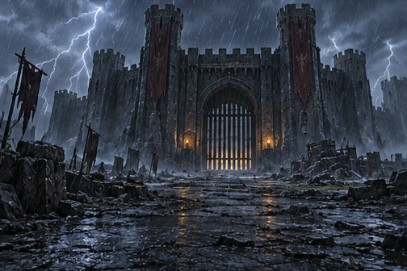
w08 — 雷雨の大手門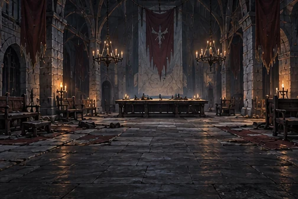
w09 — 捨て砦の本丸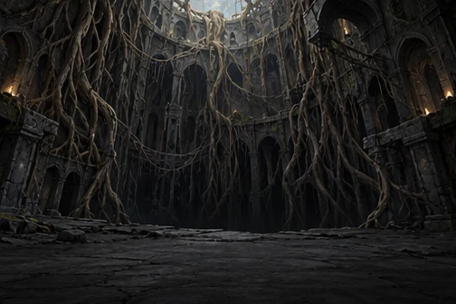
w10 — 根の這う縦穴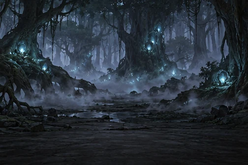
w11 — 地の底の霧森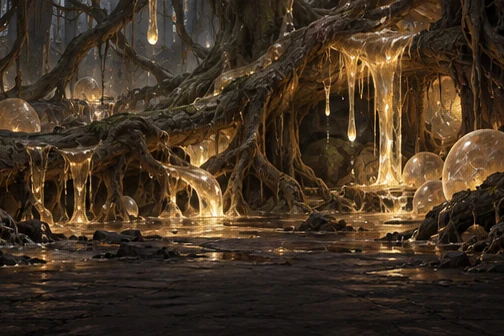
w12 — 樹液の苗床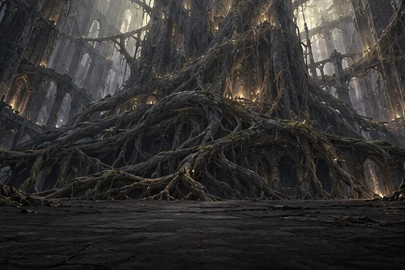
w13 — 魂喰らいの大樹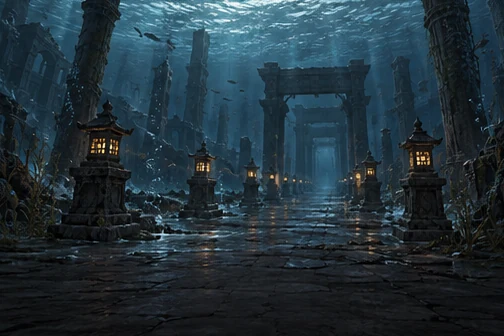
w14 — 水底の参道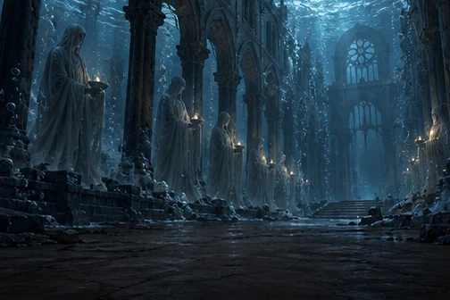
w15 — 溺れた聖歌の回廊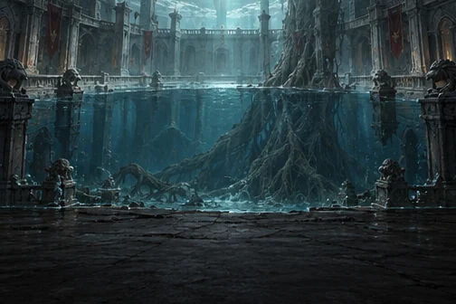
w16 — 洗礼の大水槽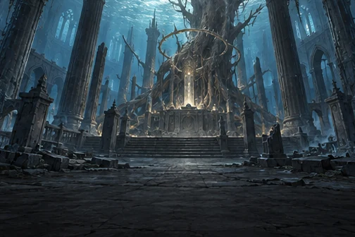
w17 — 沈める大神殿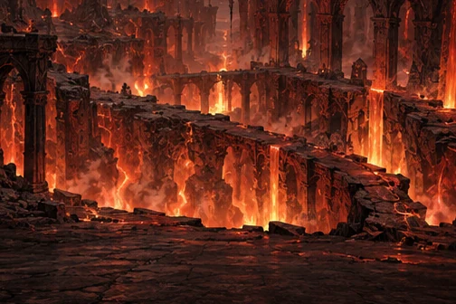
w18 — 火を噴く地割れ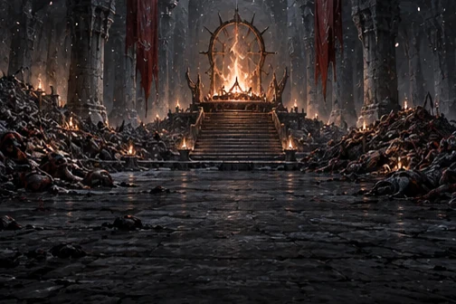
w19 — 灰の降る祭場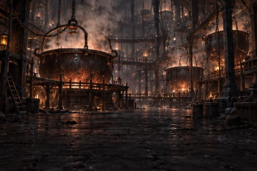
w20 — 魂を煮る釜場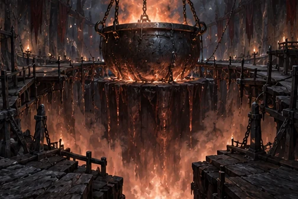
w21 — 業火の大釜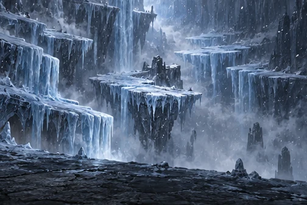
w22 — 奈落の氷棚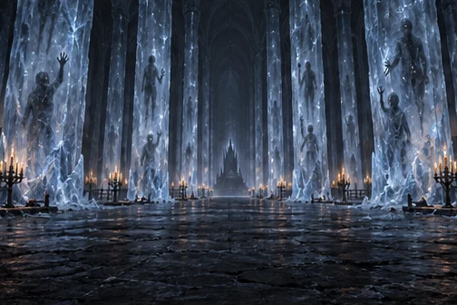
w23 — 凍れる操霊師の間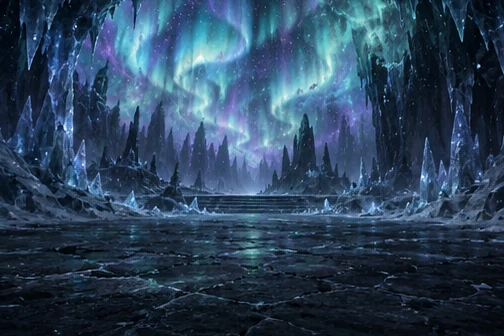
w24 — 極光の氷窟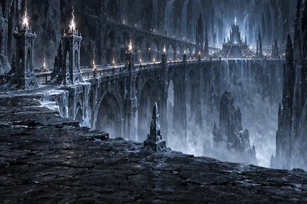
w25 — 凍てつく大回廊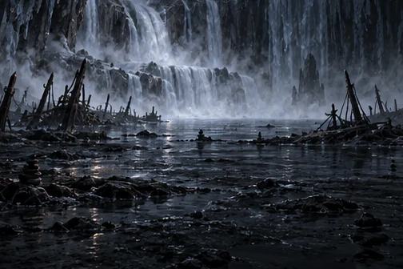
w26 — 腐れ水の岸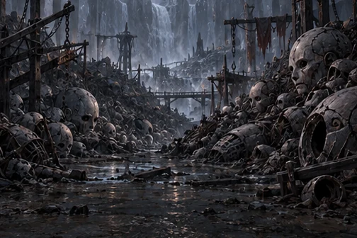
w27 — 器の捨て場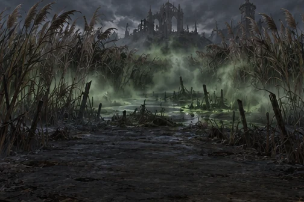
w28 — 毒霧の葦原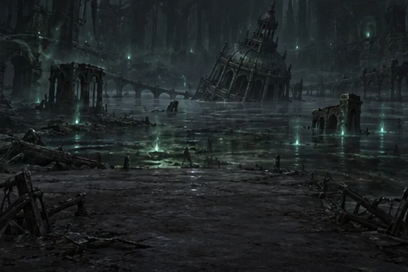
w29 — よどみの底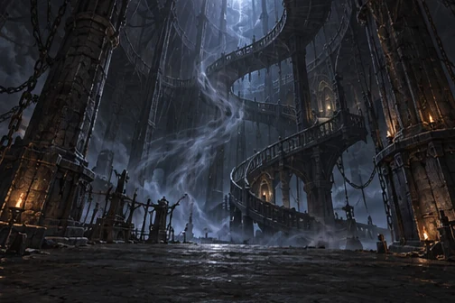
w30 — 風鳴りの螺旋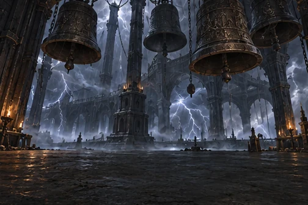
w31 — 嵐を鳴らす鐘楼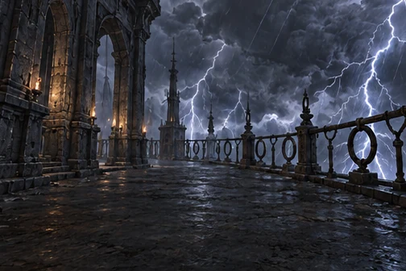
w32 — 雷の落ちる回廊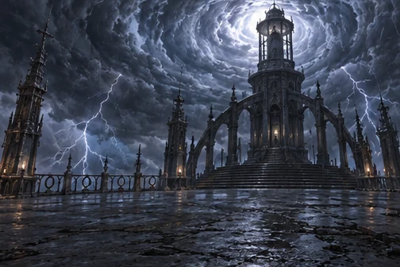
w33 — 嵐の尖塔の頂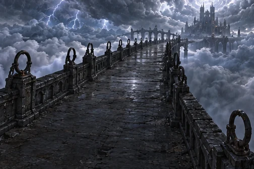
w34 — 雲を渡る石橋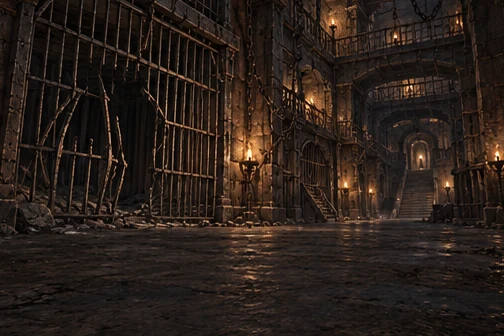
w35 — 闘獣の檻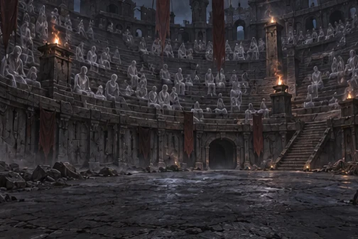
w36 — 亡き観客の階段席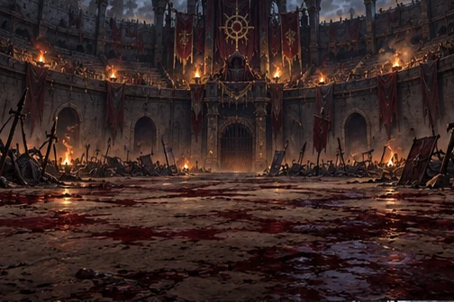
w37 — 血の砂の闘技場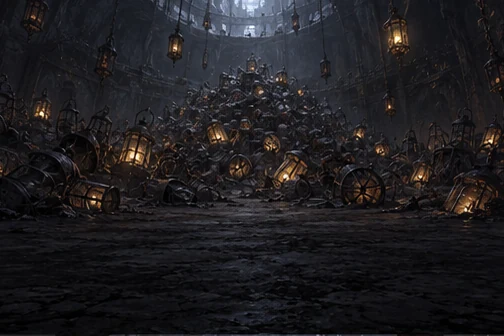
w38 — 灯籠の吹き溜まり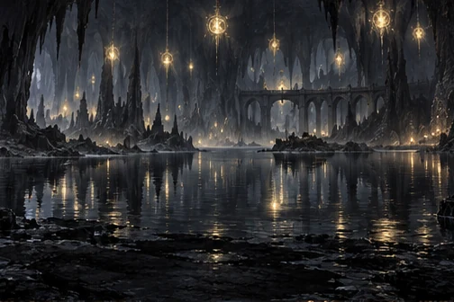
w39 — 黒い灯の地底湖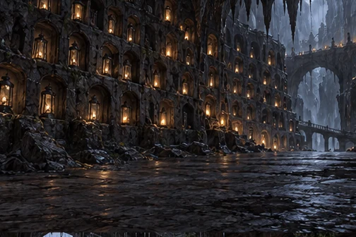
w40 — 名を刻む石窟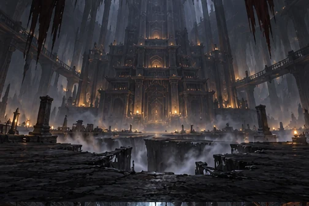
w41 — 底なしの大伽藍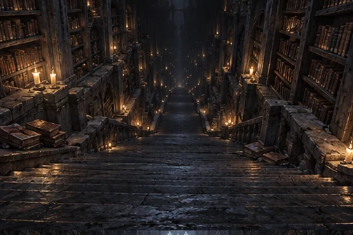
w42 — 書架の大階段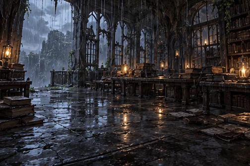
w43 — 雨垂れの書庫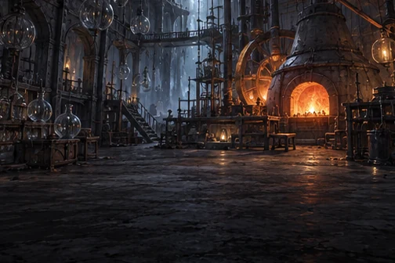
w44 — 眠り灯の工房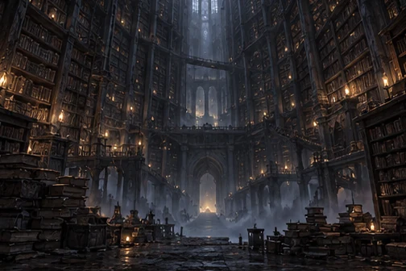
w45 — 大書庫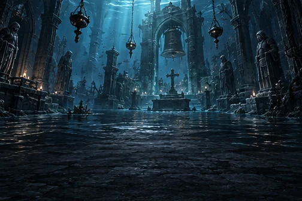
ws1 — 沈んだ礼拝堂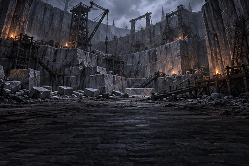
ws2 — 石眠りの石切り場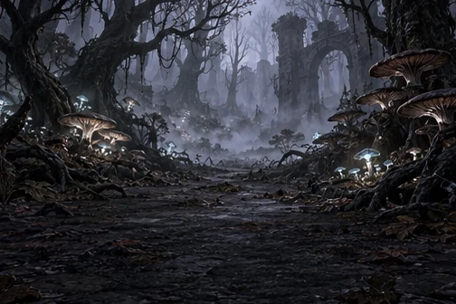
ws3 — 霧の迷い森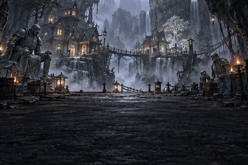
ws4 — 銀業の隠れ里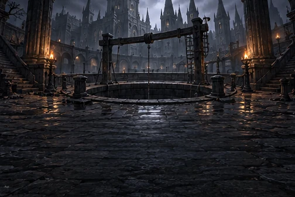
ws5 — 王都の古井戸ws6 — 見捨てられた狼煙台ws7 — 獄吏の詰所ws8 — 沈んだ書庫ws9 — 黒曜の切り場ws10 — 火守りの僧院ws11 — 白狼の吹き溜まりws12 — 氷河の裂け目ws13 — 疫病塚の底ws14 — 沈んだ渡し場ws15 — 雷鳥の巣ws16 — 錆びた避雷針の林ws17 — 雲上の庭ws18 — 勝者の控え所ws19 — 決闘の小円形場ws20 — 大空洞の主の寝床ws21 — 化石竜の墓所ws22 — 水晶の鉱脈ws23 — 絵本の閲覧室ws24 — 閉架の書庫w00_forest — 近くの森の古屋abyss — 無限迷宮